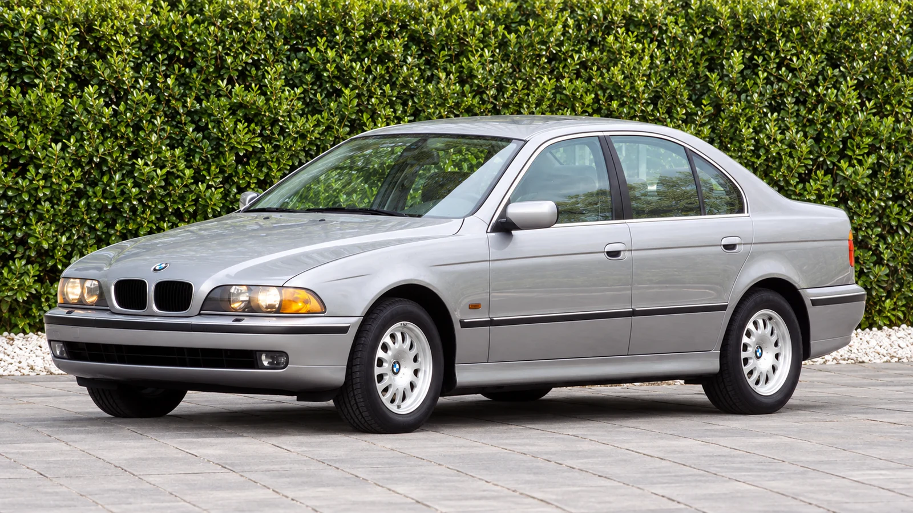
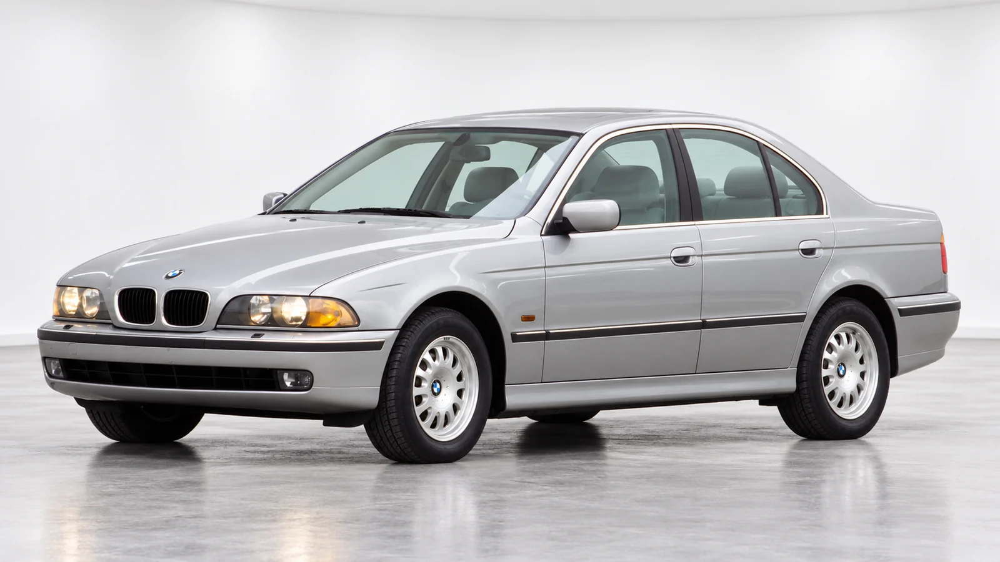

An everyday model tells a different story
The M5 attracts the posters, the auction headlines and the arguments about a perfect sports sedan. The 528i asks a quieter question: what did a 5 Series offer when its job was to serve as an everyday car? That makes it a particularly useful entry point into the E39 generation.
BMW’s archive dates the E39 528i from September 1995 to August 2000 and identifies its 2,793-cc inline-six. The archive gives 142 kW for its output; that is an archive specification, rather than a claim that every market used the same horsepower label. The 530i subsequently took its place. [1]
The distinction between a model’s global history and its U.S. model year is worth preserving. BMW’s U.S. history notes that the E39 reached America for 1997 with the 528i and 540i. There was no U.S. 1996-model-year 5 Series. A car’s build date, first registration and model-year designation can tell different parts of its story. [2]

Engineering that sits beneath the familiar shape
The fourth-generation 5 Series debuted at Frankfurt in 1995. BMW’s history emphasizes extensive light-alloy suspension construction and notes rack-and-pinion steering for the six-cylinder versions. These are more useful foundations for a discussion of the E39 than an assumption that every car with the same body feels identical. [2]
| Model examined | BMW 528i, E39 generation |
|---|---|
| Engine displacement | 2,793 cc, inline-six |
| BMW archive production dates | September 1995–August 2000 |
| U.S. introduction | 1997 model year |
Reducing the mass of suspension components can help the wheels respond to the surface. It does not guarantee a particular ride by itself: spring rates, dampers, bushings and tires complete the system. The engineering choice is significant because it shows where BMW invested attention, away from the features visible in a showroom photograph.
That matters even more now. A surviving car is an accumulation of replacement parts and maintenance decisions. Its present behavior cannot be read directly from a specification written three decades ago. The badge establishes identity; condition determines what the owner experiences.
Why the standard car is worth looking at
The pre-facelift 528i illustrated here wears modest factory wheels and standard bodywork. That configuration makes the relationship between the cabin, wheelbase and overhangs easier to see. Nothing in the shape needs an oversized wheel to explain the car’s purpose.
Its visual restraint also changes the way it occupies a street. A practical sedan can become familiar without turning anonymous: a clear beltline, a defined glasshouse and readable surfaces provide recognition at a distance. That is a design observation, rather than proof that later cars are inherently less successful.
BMW’s generation archive describes roughly 1.5 million E39-series cars. That is a figure for the broader generation, not a production total for the 528i alone. [3] The large family of surviving cars gives the E39 a social history beyond the most collectible version: commutes, airport runs, long trips and years of ordinary ownership.

Preservation begins with the less glamorous questions
Anyone shopping for an older 528i should begin with identity and documentation. Match the VIN, establish the market specification and read the service records as a sequence. An independent inspection can then assess structural condition, leaks, suspension wear and the quality of previous repairs. A clean photograph answers none of those questions.
Budgeting should include a reserve for work that inspection identifies, rather than assuming the advertised price is the complete cost. Equally, a modification is not automatically a benefit. Ask what problem it solves, whether it fits the intended use and whether the original parts are available.
The 528i’s place in the E39 story is valuable precisely because it was an ordinary choice. It shows how a generation’s engineering and proportions reached everyday buyers. Keeping that experience legible requires more than preserving a badge: it requires a coherent car, with the right parts and an honest account of its condition.
Sources & method
Checked October 12, 2026. Analysis is original; externally reported specifications and measurements are linked above. Generated imagery is illustrative, not documentary.